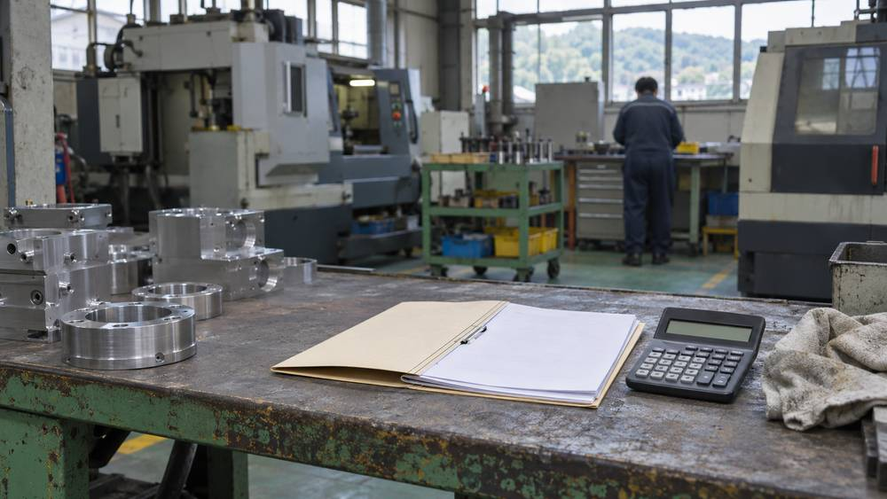
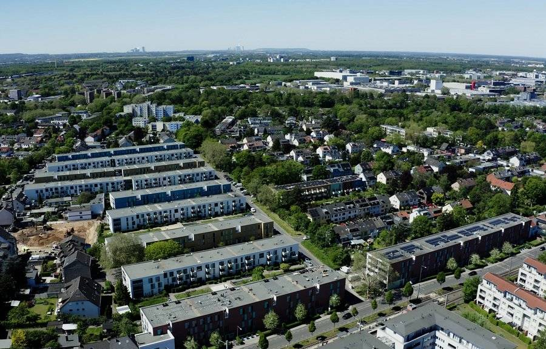

산업·경제
수자원공사, 50여 개 기관과 수상태양광 협의체 출범…2030년까지 10곳 500MW 개발
정책제언·기술시공·기자재 3개 분과, 반기마다 정기회의 / 첫 안건은 수상구조물 성능·평가 기준

충남도, 수출 중소기업 탄소 배출량 산정·검증 돕는 전담조직 가동…철강·알루미늄부터
행정부지사 단장, 행정·기업·측정보고검증·정책자문 4개 분야 / 유럽연합 탄소국경조정제도 올해 1월 본격 시행, 12월까지 도 지원 전략

지역 중소·중견기업 보증부 대출 4조5,000억 원, 시·도 공모 성적 따라 나눈다
1차 13개 시·도에 3조7,400억 원…최우수 3곳 3,800억 원씩 / 11월 2일 발표보다 등급별 금액 줄고 7,600억 원은 2차 초광역 공모로

충남 사회적경제기금, 90억 원 융자에서 임팩트투자로 넓힌다
한국사회가치연대기금과 11월 17일 협약…민간기금·지역 금융중개기관·기후에너지 분야 금융 / 「사회연대경제기본법」 2027년 3월 16일 시행

[부산형 햇빛소득②] 기업 PPA로는 수익률 2%대…"부산시가 전기 사서 배출권 비용 아끼자"
부산연구원 "고정가격 상한 150원 아래, 주차장 태양광은 145원에 팔면 원금도 못 건져" / 부산시 배출권 구매비 7억 원대서 20억 원 넘게…시가 PPA 구매자 되면 IRR 5% 넘어 / 전력거래소 "직접 PPA 300kW 이상 고압 요건 완화 검토" / 자유토론서 "협동조합에 맡겨 달라"…선로 1.4km·부서 칸막이 지적


철원·화천 군의원, 접경지역 정책포럼서 영농형 태양광 군민펀드 제안
철원 농지 약 60% 외지인 소유 우려…화천은 군 유휴 추정부지 약 1,087만㎡ 활용 특례 확대 제안


테네시 태양광 단지에서 소 15마리가 풀베기 75% 맡아…설비 보강비는 3% 더 들어
3.25MW 크리스티애나 단지, 패널 기울기를 20~30도로 묶는 '방목 모드' 적용…전기는 지역 전력회사가 TVA 도매 요금보다 싸게 산다

독일 생태경제연구소, 에너지협동조합 여성 참여 걸림돌 짚은 정책제안서 발간
쉬운 말·하이브리드 회의·활동 쉼 허용 권고, 브레멘 조합은 감사회 체험 프로그램 운영

서울시의회 오중석 의원, SH 임대단지 태양광 요금상계 현황 공개 요구
LH는 세종 행복주택 238가구에서 요금상계를 시작했고 SH 고덕 온빛채 697가구는 제로에너지건축물 3등급 단지다

위스콘신 민간 전력회사 가정용 요금 2020년 뒤 29% 상승…시 공영 14%·협동조합 15%
연 8,000kWh 사용 가구로 계산하면 시 공영 전력이 민간보다 488달러 적어

셰틀랜드 의회, 송전 막혀 버려지는 풍력 전기를 주민 요금에 쓰는 방안 조사 착수
가구 40%가 에너지빈곤인데 터빈 103기 풍력단지는 송전이 막히면 전기를 내보내지 못해…SSE·오프젬·GB에너지 참여, 빨라야 2028년 시범 운영 목표

독일 쾰른 오센도르프 435가구에 지붕 태양광 전기 공급…지역 기본공급 요금보다 18% 싸게
협동조합 두 곳이 건물 55동 지붕에 태양광 750kW와 저장장치 670kWh를 설치하고 9월 15일 개소식, 전 건물 가동은 연말까지


産業・経済
韓国水資源公社、50余りの機関と水上太陽光協議体を発足…2030年までに10カ所500MW開発
政策提言・技術施工・資機材の3分科会、半期ごとに定例会議 / 最初の議題は水上構造物の性能・評価基準
忠清南道、輸出中小企業の炭素排出量の算定・検証を支援する専任組織を始動…鉄鋼・アルミニウムから
行政副知事が団長、行政・企業・測定報告検証・政策諮問の4分野 / EU炭素国境調整措置は今年1月に本格施行、道は12月までに支援戦略
【釜山型太陽光所得②】企業PPAでは収益率2%台…「釜山市が電気を買い、排出権費用を節約」
釜山研究院「固定価格の上限150ウォン未満、駐車場の太陽光は145ウォンで売れば元本も回収できない」 / 釜山市の排出権購入費は7億ウォン台から20億ウォン超に…市がPPA購入者になれば内部収益率5%超 / 電力取引所「直接PPAの300kW以上高圧要件の緩和を検討」 / 自由討論で「協同組合に任せて」…送電線1.4km・部署の縦割りを指摘
米テネシー州の太陽光発電所で牛15頭が草刈りの75%を担当…設備補強費は3%増
3.25MWのクリスチアナ発電所、パネルの傾きを20～30度に抑える「放牧モード」を適用…電力は地元電力会社がTVAの卸売料金より安く購入
ドイツ生態経済研究所、エネルギー協同組合への女性参加の壁を指摘する政策提言書を発行
分かりやすい言葉・ハイブリッド会議・活動の休止容認を勧告、ブレーメンの組合は監査役会体験プログラムを運営
シェトランド議会、送電が詰まり捨てられる風力の電気を住民の料金に生かす方策の調査に着手
世帯の40%がエネルギー貧困なのに、103基のタービンを持つ風力発電所は送電が詰まると電気を送り出せず…SSE・Ofgem・GBエナジーが参加、早くて2028年の試行運用が目標
独ケルン・オッセンドルフの435世帯に屋根の太陽光電力を供給…地域の基本供給料金より18%安く
協同組合2団体が建物55棟の屋根に太陽光750kWと蓄電池670kWhを設置、9月15日に開所式、全棟の稼働は年末まで
产业·经济
忠清南道成立专门组织，帮助出口中小企业核算与核查碳排放…从钢铁和铝开始
行政副知事任组长，分行政、企业、测量报告核查和政策咨询4个领域 / 欧盟碳边境调节机制今年1月全面实施，道将在12月前制定支援战略
【釜山型阳光收入②】仅靠企业PPA收益率2%左右…"由釜山市购电，节省排放权费用"
釜山研究院："固定价格上限低于150韩元，停车场光伏以145韩元出售连本金都收不回" / 釜山市排放权购买费从7亿增至20亿韩元以上…市政府成为PPA买方则内部收益率超过5% / 电力交易所："研究放宽直接PPA的300kW以上高压条件" / 自由讨论："交给合作社吧"…指出1.4公里线路缺口与部门壁垒
田纳西光伏电站15头牛承担75%除草工作……设备加固成本增加3%
3.25兆瓦克里斯蒂安娜电站采用将组件倾角限制在20～30度的放牧模式……电力由当地电力公司以低于TVA批发价的价格购买
设得兰议会着手调查如何把因输电受阻而被弃用的风电用于居民电费
40%家庭陷入能源贫困，拥有103台风机的风电场在输电受阻时无法送出电力…SSE、Ofgem、GB能源参与，目标最早2028年开展试点运行
Industry & Economy
K-water launches floating solar council with some 50 organisations, plans 500MW at 10 sites by 2030
Three working groups on policy, engineering and equipment, with regular meetings every six months / First agenda item: performance and evaluation standards for floating structures
South Chungcheong sets up task force to help exporting SMEs calculate and verify carbon emissions, starting with steel and aluminium
Vice governor heads four teams on administration, business support, measurement-reporting-verification and policy advice / EU Carbon Border Adjustment Mechanism fully applied since January; province to draw up support strategy by December
[Busan Sunlight Income ②] Corporate PPAs yield about 2%; researchers propose the city buy the power and save on emission allowances
Busan Development Institute: fixed-price cap below 150 won, parking-lot solar sold at 145 won cannot recover its principal / Busan City's allowance purchases rise from 700 million won to over 2 billion won; with the city as PPA buyer, IRR tops 5% / KPX: easing the 300kW high-voltage requirement for direct PPAs is under review / Open discussion: "Leave it to cooperatives"; 1.4km grid gap and departmental silos raised
Cheorwon and Hwacheon county councillors propose an agrivoltaic residents' fund at border-region policy forum
Concern that about 60% of Cheorwon farmland is owned by outsiders; Hwacheon councillor proposes wider use of about 10.87 million sq. m of presumed idle military land
Korea's public finance put $27.7 billion into overseas fossil fuels, 4.8 times its climate finance
2018-2022 figures: Green Climate Fund payment rate 23.3%, 34th of 35 pledgers
Jeju Energy Corporation starts R&D on electrolysis that responds to renewable swings
First-year kick-off held on Nov. 6; integrated trial of two electrolysis types and storage planned from 2028
Tennessee solar farm's 15 cattle handle 75% of mowing, with hardening costs just 3% higher
At the 3.25MW Christiana site, a 'graze mode' holds panel tilt to 20-30 degrees; the local utility buys the power below the wholesale rate it paid TVA
German ecological economics institute issues policy paper on barriers to women in energy cooperatives
Recommends plain language, hybrid meetings and allowing breaks from volunteering; Bremen cooperative runs a supervisory board trial programme
Seoul Councillor Oh Jung-seok Asks SH to Disclose Net-Billing Status at Rental Estates With Rooftop Solar
LH began net billing at 238 happy-housing units in Sejong; SH's 697-unit Godeok Onbitche is also a zero-energy building grade 3
Wisconsin investor-owned utilities raised home rates 29% since 2020, against 14% at municipal and 15% at co-op utilities
At 8,000kWh a year, municipal utilities cost $488 less than investor-owned ones
Shetland Council Begins Study of Using Wind Power Lost to Grid Bottlenecks to Cut Residents' Bills
40% of households are in fuel poverty, yet the 103-turbine wind farm cannot export when the grid is congested; SSE, Ofgem and GB Energy join, with trials targeted for 2028 at the earliest
Cologne's Ossendorf: Rooftop Solar Power for 435 Homes at 18% Below the Local Basic Supply Rate
Two cooperatives put 750kW of solar and 670kWh of storage on 55 buildings and held an opening on Sept. 15; all buildings are due online by year-end
Shinhyup to Lend Up to 85% of Sunlight Income Village Solar Costs and Joins Gochang Offshore Wind Loan
Interest subsidy for agency-recommended villages; 100 billion won syndicated loan agreed for Gochang offshore wind on August 6